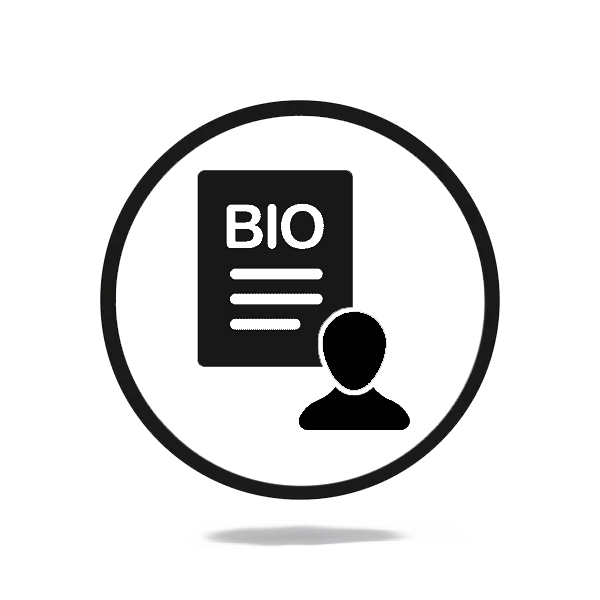
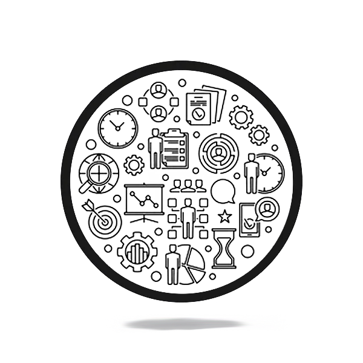
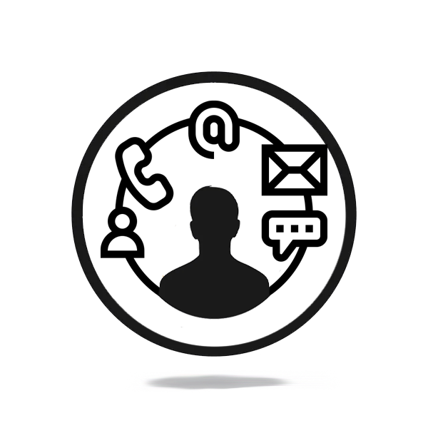

¡Explora mi mundo y contáctame si quieres saber más!
Bibliografía
Construyendo un Legado

Acerca
Aquí podrás conocer más sobre mi experiencia profesional, mis logros y los oficios que han marcado mi trayectoria.
Portafolio
Un viaje creativo e innovador

Proyectos
En este portafolio, encontrarás mis logros más significativos y los proyectos que han dejado huella en mi vida.
Redes
Mi Presencia Digital

Contáctame
Conéctate conmigo a través de mis plataformas digitales para establecer un canal directo de comunicación.